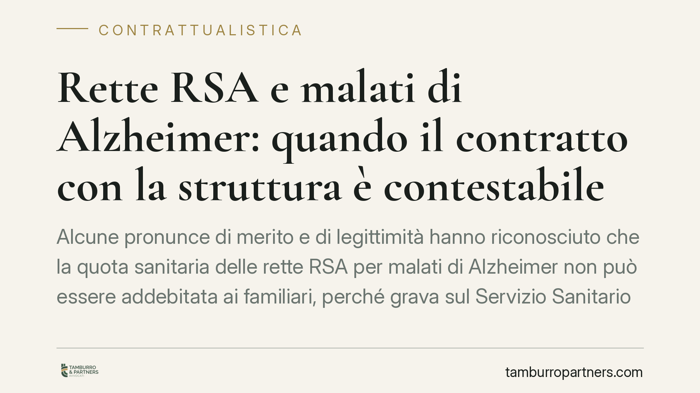

Rette RSA e malati di Alzheimer: quando il contratto con la struttura è contestabile
Alcune pronunce di merito e di legittimità hanno riconosciuto che la quota sanitaria delle rette RSA per malati di Alzheimer non può essere addebitata ai familiari, perché grava sul Servizio Sanitario Nazionale. Il tema riguarda migliaia di famiglie che hanno firmato contratti di ricovero. Vediamo cosa dice il quadro normativo e quali verifiche fare prima di agire.

Il punto della questione
Quando un malato di Alzheimer in fase avanzata viene accolto in una RSA (Residenza Sanitaria Assistenziale), la retta copre due componenti distinte: una sociale, legata ad alloggio, vitto e assistenza alla persona; una sanitaria, legata alle cure e all'assistenza infermieristica e riabilitativa.
La distinzione non è formale. La componente sanitaria, secondo un orientamento che va consolidandosi nella giurisprudenza, grava sul Servizio Sanitario Nazionale e non può essere traslata sul paziente o sui suoi familiari attraverso il contratto di ricovero. Da qui le controversie sulla validità delle clausole che addebitano l'intera retta alla famiglia.
*Nota di cautela:* alcune decisioni di merito sono richiamate in rete con estremi non sempre verificabili. Prima di fondare una pretesa su una singola pronuncia, occorre reperirne il testo integrale e verificarne numero, anno e definitività. Su questo tema non esiste ancora un indirizzo uniforme e vincolante: le soluzioni variano caso per caso.
Inquadramento normativo
Il riferimento centrale sono i Livelli Essenziali di Assistenza (LEA), oggi definiti dal DPCM 12 gennaio 2017. Gli articoli dedicati all'assistenza sociosanitaria (in particolare le norme su assistenza residenziale e cure a persone non autosufficienti, anche affette da demenze) individuano le prestazioni che il SSN è tenuto a garantire e la ripartizione degli oneri tra sanità e assistenza sociale.
Il principio dell'integrazione sociosanitaria discende dal D.Lgs. 502/1992 (art. 3-septies), che distingue le prestazioni a rilevanza sanitaria da quelle a rilevanza sociale. Quando le due componenti risultano di fatto inscindibili – perché il bisogno sanitario è prevalente, come spesso accade nelle demenze avanzate – una parte della giurisprudenza ritiene che l'onere debba ricadere sul SSN, con la conseguenza che l'addebito integrale alla famiglia può essere contestato.
Sul piano civilistico, l'eventuale ripetizione delle somme indebitamente versate si fonda sull'indebito oggettivo (art. 2033 c.c.). Il termine di prescrizione è di norma decennale, con decorrenza che – secondo l'orientamento prevalente – va riferita a ciascun pagamento. Si tratta però di un profilo delicato: la decorrenza e la stessa qualificazione della pretesa vanno verificate nel caso concreto, perché non mancano letture differenti.
Implicazioni pratiche
Per le famiglie, la posta in gioco è doppia: ridurre le rette future e, in presenza dei presupposti, recuperare parte di quanto già pagato. Anche gli eredi possono avere titolo a ripetere somme versate dal congiunto, nei limiti di prescrizione.
Attenzione, però: non esiste alcun automatismo. Il recupero dipende dalla concreta classificazione clinica del paziente, dal contenuto del contratto firmato, dalla documentazione sanitaria e dalla prova della prevalenza del bisogno sanitario. Un contratto di ricovero non è nullo in sé: va valutata la singola clausola e il singolo rapporto.
Un errore da evitare è sospendere i pagamenti d'istinto. L'interruzione unilaterale della retta espone a decreti ingiuntivi, interessi e, nei casi peggiori, a conseguenze sulla permanenza dell'assistito nella struttura. La contestazione va impostata per iscritto, su basi documentali, senza interrompere il rapporto prima di aver inquadrato la posizione.
Cosa fare in concreto
- Recuperate il contratto di ricovero e tutti gli allegati: cercate le clausole che individuano importo e composizione della retta.
- Richiedete la documentazione sanitaria (cartella clinica, PAI, certificazioni di non autosufficienza) utile a dimostrare la prevalenza del bisogno sanitario.
- Ricostruite i pagamenti con estratti conto e ricevute, verificando i periodi a rischio di prescrizione.
- Non sospendete le rette prima di un'analisi completa: continuate a pagare, se necessario con riserva espressa di ripetizione.
- Fate valutare la posizione da un legale, verificando la reale percorribilità dell'azione: la giurisprudenza è ancora in evoluzione e ogni caso ha esiti diversi.
Consigliamo di impostare qualunque contestazione solo dopo l'esame della documentazione: in questa materia l'istruttoria preliminare è decisiva e determina la stessa sostenibilità della pretesa.
---
Contributo informativo a cura di Tamburro & Partners Avvocati - Avv. Giuseppe Tamburro. Non costituisce parere legale.
Ogni contratto ha il suo equilibrio.
Se vuoi una revisione delle clausole o una redazione su misura, scrivi allo studio. Ti rispondiamo entro un giorno lavorativo.